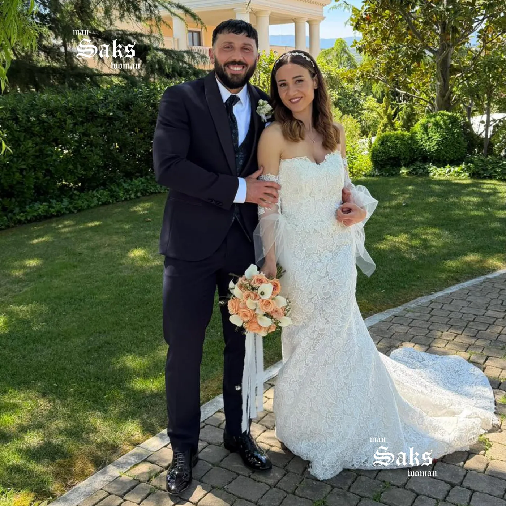
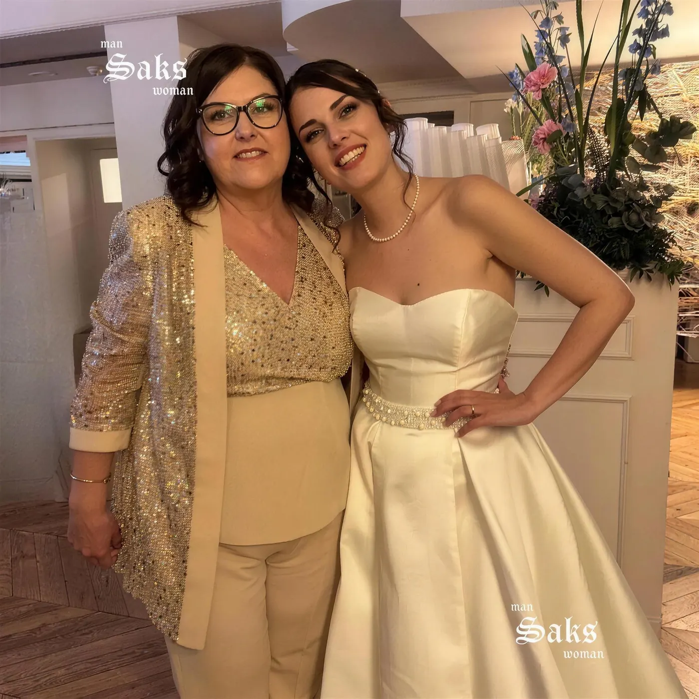
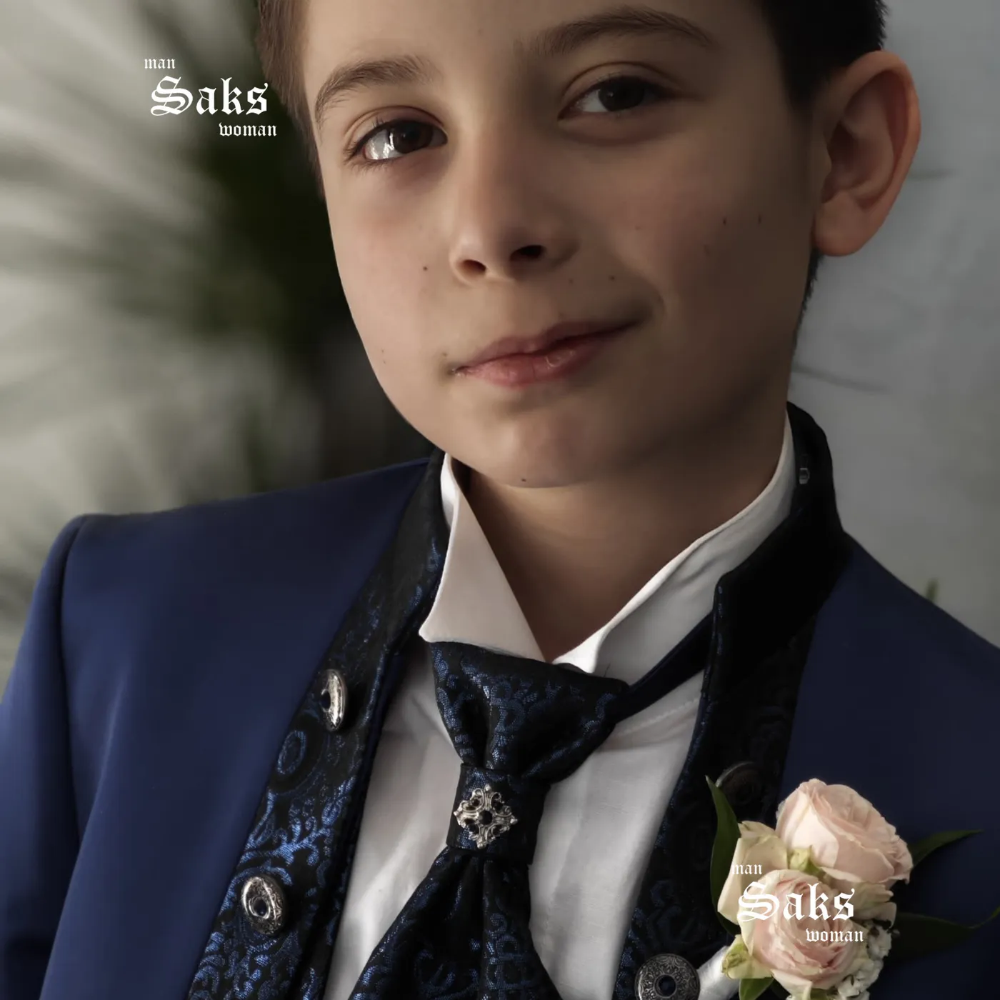
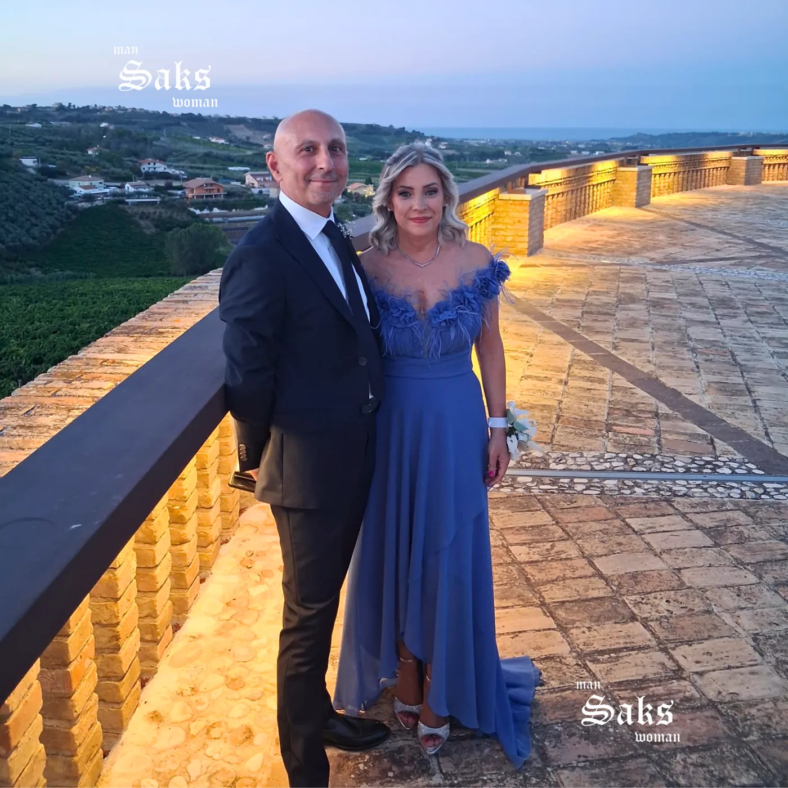

01
Lo sposo
Cautieri cerimonia, cucito e personalizzato fino al ricamo del nome.
Chieti ScaloAbiti da cerimonia
Abiti da cerimonia uomo, donna e bambino — scelti, cuciti e personalizzati su misura nel nostro atelier.
l'essenza di Saks
Un abito da cerimonia si indossa una volta, ma resta in ogni fotografia, in ogni ricordo. Per questo non lo vendiamo soltanto: lo costruiamo insieme a te, dal tessuto all'ultimo bottone.
Le occasioni

01
Cautieri cerimonia, cucito e personalizzato fino al ricamo del nome.

02
Musani Couture: paillettes, satin e linee pensate per lei.
03
Testimoni, ospiti, coppie: eleganza coordinata per tutta la famiglia.

04
Comunioni, battesimi, paggetti: la collezione cerimonia bambino.
05
Giacca e pantalone avorio, linee pulite: il successo ha un taglio.
06
18 o 60 anni, un traguardo merita un'eleganza su misura.
un processo sartoriale
Sfogli con noi le collezioni dei migliori marchi italiani e trovi il modello che ti somiglia.
Lane pregiate, sete, satin. Revers, fodere, bottoni, ricami: ogni scelta è tua.
I nostri sarti adattano l'abito alle tue forme, prova dopo prova. Su misura fino alla taglia 75.
Ritiri un abito che sembra cucito addosso — perché lo è.
Fino alla taglia 75. Perché l'eleganza non ha una misura sola.
Rivenditore autorizzato · Chieti & Pescara

“L'abito ha riscosso un enorme successo, ho ricevuto tantissimi complimenti.”
Paola · testimone di nozze
il tuo abito
Lun 16:00 – 20:00
Mar – Sab 9:30 – 13:00 · 16:00 – 20:00
Domenica chiuso
0871 562682 · WhatsApp
@sakscerimonia